Knotts Spring 2008
We're here at Knotts Berry Farm. We wanted to see some construction on Pony Express. And since last time we went to Knotts, there was a wildfire nearby, we decided to go today. And here is a view of Knotts from the Radisson Hotel.
Well, it seems that Panda Express is open.
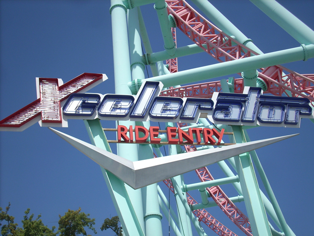
But who needs Panda Express when there's kickass Xcelerator to ride!!!
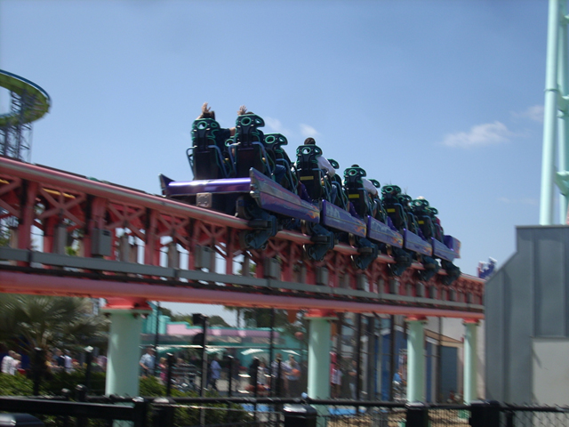
Xcelerator's launch of pure insaneness!!!
 While Overbanked Curves arn't much, at least they're something.
While Overbanked Curves arn't much, at least they're something.
 Riders about to worship Xcelerator after a great ride.
Riders about to worship Xcelerator after a great ride.
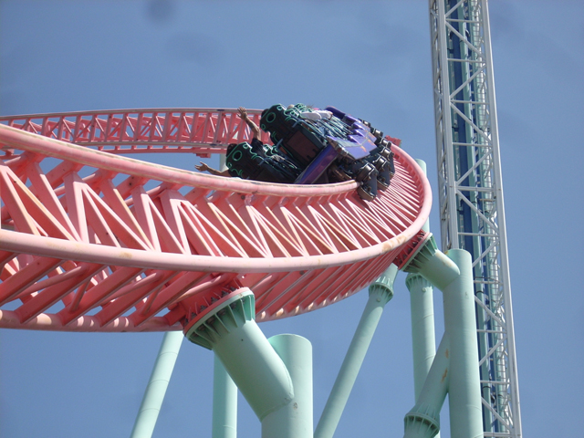
Yummy Xcelerator Goodness!!!!
Ok, by now, you've porbably heard of all the Gum stuff. Like Revolution's Gum Seat, Superman's Gum Sign, Goldrusher's Gum Lifthill, Montezooma's Gum Rails, and Jet Stream's Gum Tunnel. But now ladies and gentelmen, brace yourself for Supreme Scream's SPIT SIGN!!! (YES! THAT IS DRIED SPIT ON THE SIGN!!!!)
Meh, It's not like there's a brain to freeze anyway.
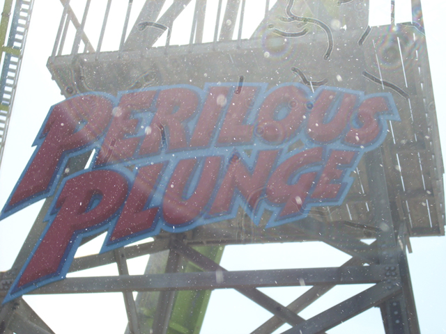
All right!! Time for a crazy water ride that I haven't ridden in a while!!!
 Ok. For those who don't know, Originally, Perilous Plunge opened with lap bar restraints. But then, some fat lady fell out and then they had to use f**king four point restraints. But that didn't work since 95% of the people were either too fat or too skinny. So then, they got these new boats. But these have been criticized for having OTSRs and reducing the splash. But on Perilous Plunge, it's not about the splash, it's about the EJECTOR AIR!!!!!!!
Ok. For those who don't know, Originally, Perilous Plunge opened with lap bar restraints. But then, some fat lady fell out and then they had to use f**king four point restraints. But that didn't work since 95% of the people were either too fat or too skinny. So then, they got these new boats. But these have been criticized for having OTSRs and reducing the splash. But on Perilous Plunge, it's not about the splash, it's about the EJECTOR AIR!!!!!!!
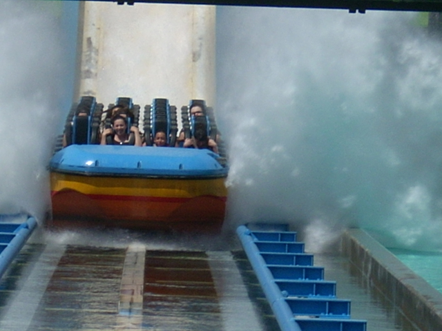
See look. Smaller Splash. To see Raw Footage of Peroulis Plunge, click on this link.
 Meh, I've gotten wetter on Grizzly @ DCA.
Meh, I've gotten wetter on Grizzly @ DCA.
Oh Wait!! What's that I see in the distance?
Holy Crap!! It's Boobs!!! IN A CEDAR FAIR PARK!!!!! I'm seriously going to start counting down until Cedar Fair removes this. Enjoy it while it lasts!
Oh yeah, there's no water on Riptide anymore. Meh, It's not like I ride Riptide anyway.
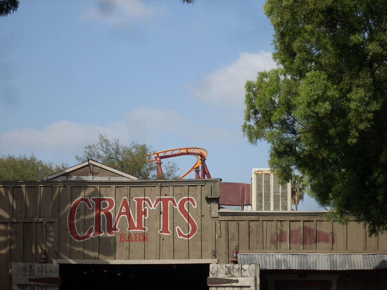
Oh look!! What's that?
 Why it's Knotts new coaster Pony Express. It looks better than I thought it would.
Why it's Knotts new coaster Pony Express. It looks better than I thought it would.
 From here, you can see the size of Pony Express.
From here, you can see the size of Pony Express.
 I look foreward to riding it this summer.
I look foreward to riding it this summer.
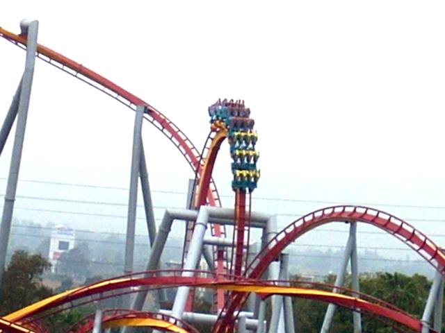
Now it's time for the B&M of the day. Good ole Silver Bullet.
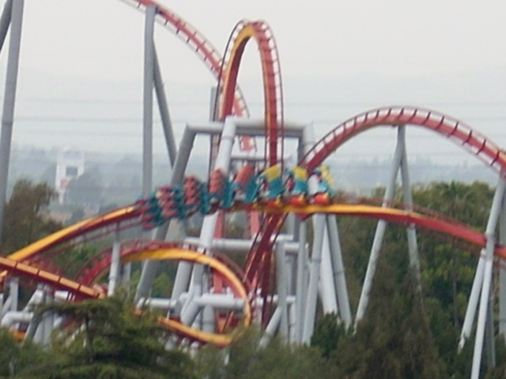
WORST HEARTLINE SPIN EVER!!!
 The corkscrews are decent though.
The corkscrews are decent though.
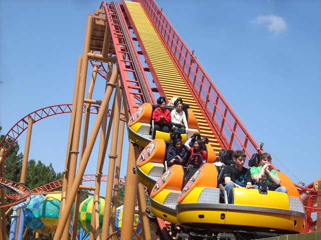
And all though you can't tell in this picture, Sierra Sidewinder is indeed stuck on the lifthill.
While we waited for Sierra Sidewinder to open, we went into the Peanuts Playhouse for Celeste.
Celeste fits in here so well. (Part of me is being sarcastic and part of me is serious when I say this!)
I'm Britney Spears II!!! The reason I am in here is because I have lost my freaking mind!!!
Britney Spears II falling on her ass in the Peanuts Playhouse. She shouldn't have had so many beers at that party last night.
OMG!!! I am SO HIGH OFF THE GROUND!!!! NO THIS IS NOT DRUNK TALK!!! I AM SERIOUSLY HUNDREDS OF FEET IN THE AIR AND I WANT MY MOMMY AND PREGNANT SISTER!!!!
Insane Asylam Paitent #32.
Celebreties are the only exeption.
 I am so upset about not being able to ride the Snoopy Bounce that I'm want to throw my wig off and have a random meltdown about how I can't see my kids and how I can't jump in the Snoopy Bounce.
I am so upset about not being able to ride the Snoopy Bounce that I'm want to throw my wig off and have a random meltdown about how I can't see my kids and how I can't jump in the Snoopy Bounce.
 Time for a good old classic Shuttle Loop.
Time for a good old classic Shuttle Loop.
 This ride is still fun despite being os old.
This ride is still fun despite being os old.
Hi. I'm Britney Spears II. I have completely lost my mind and now I think I'm a peach flavored butterfly. To see my adventures as a Peach Flavored Butterfly, click here.
 Time for the real forceless atracction of the park!
Time for the real forceless atracction of the park!
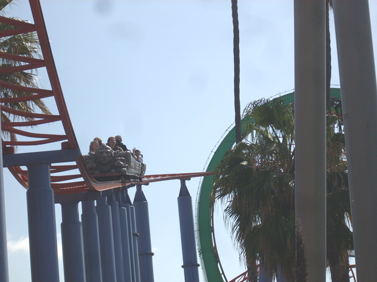
Why did I even ride this?
Hi Andrew! We rode the Pirate Ship! HA HA!!!
Read the caption above.
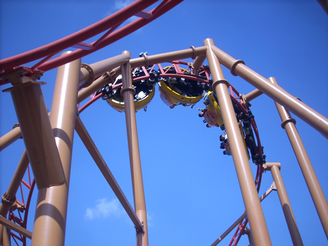
By this time, Sierra Sidewinder had reopened. So we went and rode it.
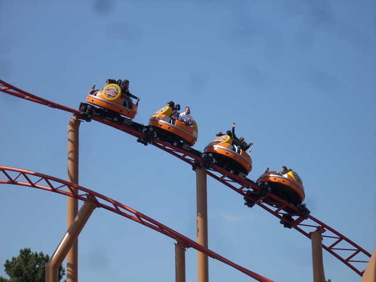
Apperently Peach Flavored Butterflys jinx spinning coasters as we rode in every single car, and every singe time, our car barely spun at all!!! (We even apoligized to the people behind us for ruining their ride at one point!)
 But even a jinxed Sierra Sidewinder is better than that Peice of S**t Pole Position.
But even a jinxed Sierra Sidewinder is better than that Peice of S**t Pole Position.
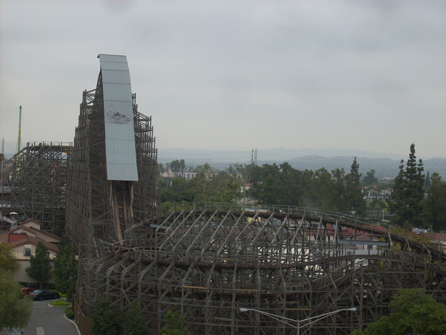
And now, the only coaster left to ride was Ghostrider.
 If you remember from last time, you heard about Ghostrider was ridicously rough and I was hoping that wouldn't be the case today.
If you remember from last time, you heard about Ghostrider was ridicously rough and I was hoping that wouldn't be the case today.
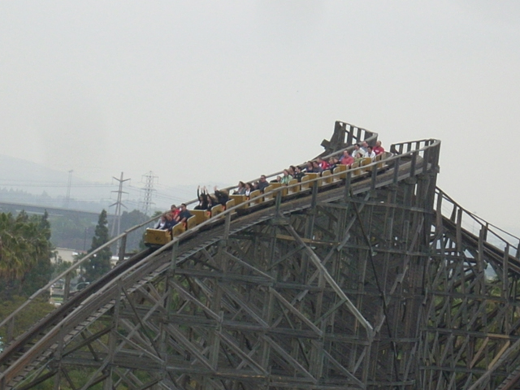
While there was plenty of jackhammering on the ride, it was more of a happy "This is a woodie. Enjoy it!" roughness instead of a "DIE YOU STUPID BITCH!" roughness.
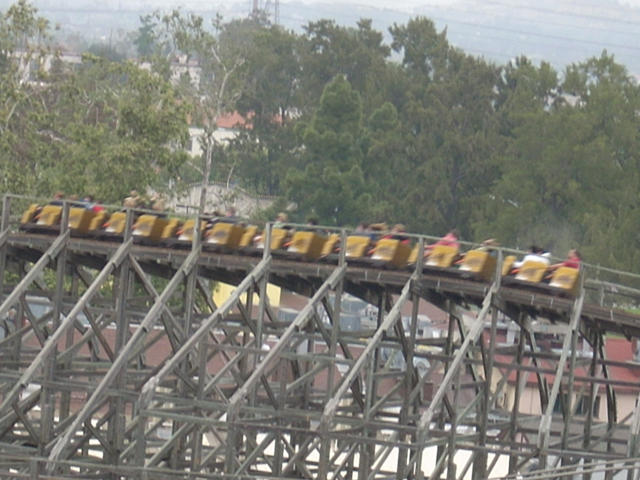
Yummy Ghostrider Goodness!
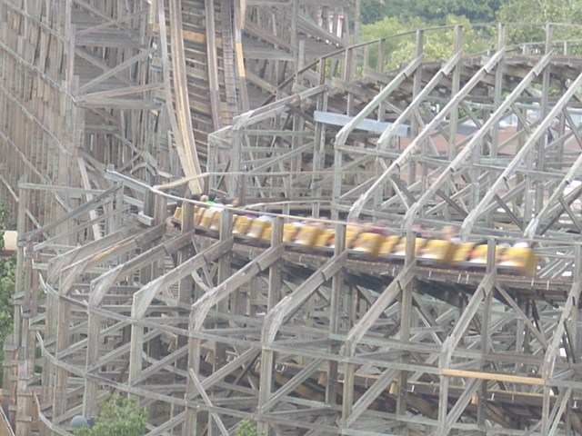
Here's a look at Ghostrider's helix of fake death.
Overall, this was a great trip. Peroulis Plunge, Pony Express Construction, and Peach Flavored Butterflys really made this a truely great update and it totally brightened up my aside from this day, crappy spring break.
Home